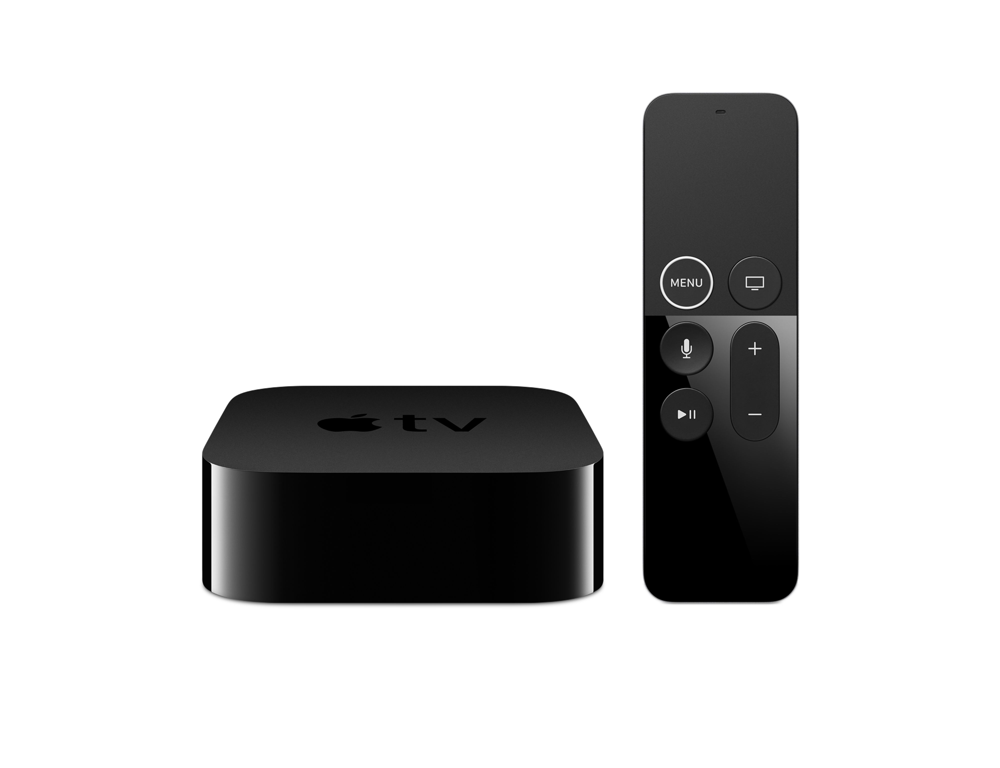

Apple TV 4K を買った
Feb 12, 2018
Apple TV 4K を買った．

最近の用途
主な用途は，ネット動画を観ること．
その他，音楽や Podcast を再生するのにも使っている．
- Netflix
- Amazon Prime Video
- Hulu
- YouTube
- iTunes
- Podcast
スペック
- 32GB
- 4K + HDR 対応
ストレージ容量は，大量に画像や動画・アプリを保存するわけではないので 32GB にした．
旧型持っている人はあまりメリットがないかも
4K TV 持っていて iTunes,Netflix で動画観まくるならオススメ
とも言及されていて，僕は初めての購入だったので 4K にしてみた．
なお，4K の発表に伴い旧型は値下げしていた．
4K TV はまだ持っていない
が，近いうちに買うだろうと思っている（たぶん）．
学生のときに買った レグザ 32inch をずっと使っているため，4K/HDR の凄さがまだ実感できていない．．．
HDMIケーブルの呪縛から開放
これまでは，Mac の Thunderbolt2 -> HDMI -> TV というフローで観ていた．
ケーブルを抜き差しするのが面倒だったり，HDMI 変換ケーブルの不調で映像が止まったり，
さらに hulu は外部ディスプレイなどに映像を映すとエラーで再生できなかったり，とトラブルが耐えなかった．
それらはもう気にしなくてよくなった．
Apple TV リモコンが使いづらい
噂には聞いていたがかなり使いづらい．
カーソル移動のしづらさ，そしてキーボード入力のUI/UXが辛すぎる．
ほとんどの操作は，iPhone の Apple TV Remote app で操作している．
サービスのパスワードは，1Password で管理していて，アプリにログインするときに長いパスワードをコピペしなくても済む．
検索
コンテンツの横断検索ができて便利だった．
タイトル名を入れると，それが放映されているインストール済みアプリの一覧が表示される．
言語設定を英語にしているからなのか，Siri で日本のコンテンツはヒットしなかった．
今後
- 4K + HDR 対応の TV 欲しい
- スピーカー欲しい（5.1ch, 7.1ch）